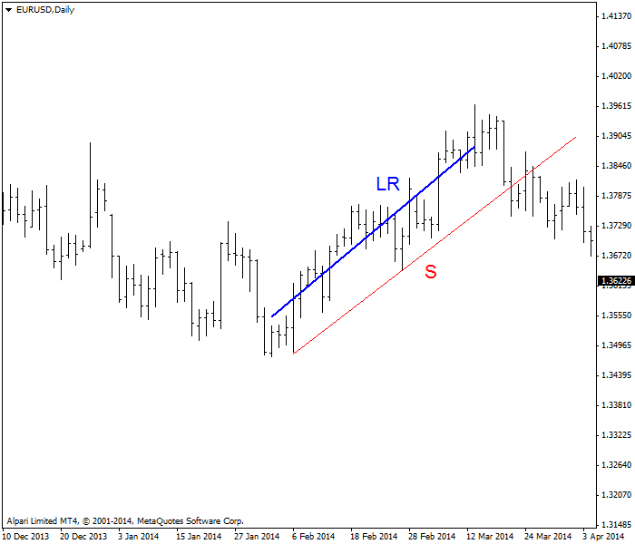
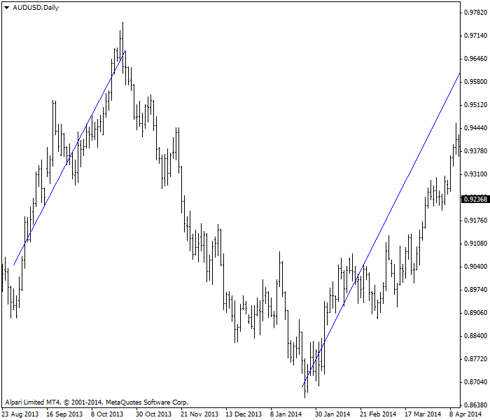

<!DOCTYPE html>
<html>
</html>
<head>
  <meta charset="utf-8">
  <meta http-equiv="X-UA-Compatible" content="IE=edge">
  <title>外汇站（fx-z.com） - 经典趋势线和数学趋势线</title>
  <meta name="description" content="">
  <meta name="viewport" content="width=device-width, initial-scale=1">
  <meta name="robots" content="all,follow">
  <!-- Bootstrap CSS-->
  <link rel="stylesheet" href="vendor/bootstrap/css/bootstrap.min.css">
  <!-- Font Awesome CSS-->
  <link rel="stylesheet" href="vendor/font-awesome/css/font-awesome.min.css">
  <!-- Google fonts - Roboto-->
  <link rel="stylesheet" href="https://fonts.googleapis.com/css?family=Roboto:400,300,700,400italic">
  <!-- owl carousel-->
  <link rel="stylesheet" href="vendor/owl.carousel/assets/owl.carousel.css">
  <link rel="stylesheet" href="vendor/owl.carousel/assets/owl.theme.default.css">
  <!-- theme stylesheet-->
  <link rel="stylesheet" href="css/style.default.css" id="theme-stylesheet">
  <!-- Custom stylesheet - for your changes-->
  <link rel="stylesheet" href="css/custom.css">
  <!-- Favicon-->
  <link rel="shortcut icon" href="img/favicon.png">
  <!-- Tweaks for older IEs--><!--[if lt IE 9]>
    <script src="https://oss.maxcdn.com/html5shiv/3.7.3/html5shiv.min.js"></script>
    <script src="https://oss.maxcdn.com/respond/1.4.2/respond.min.js"></script><![endif]-->
</head>
<body>
  <div id="all">
    <div class="container-fluid">
      <div class="row row-offcanvas row-offcanvas-left"> 
        <!--   *** SIDEBAR ***-->
        <div id="sidebar" class="col-md-4 col-lg-3 sidebar-offcanvas">
          <div class="sidebar-content">
            <h1 class="sidebar-heading"> <a href="https://fx-z.com">fx-z.com</a></h1>
            <p class="sidebar-p">介绍外汇相关的基本知识，告诉您如何进行自己的技术面和基本面分析，讲解先进的交易理念，并且为您阐述失败交易者与专业交易者之间的真正区别。 </p>
            <p class="sidebar-p">通过这些课程的学习，您将学会如何根据自己的优势来应用情绪分析，还将了解真实世界的事件会对货币汇率产生什么影响，央行在外汇市场中所发挥的作用，以及交易者在颇受欢迎的即期外汇交易中有哪些选择方案。 </p>
            <ul class="sidebar-menu">
                <!-- Link-->
                <li class="sidebar-item"><a href="https://fx-z.com" class="sidebar-link">首页</a></li>
                <!-- Link-->
                <li class="sidebar-item"><a href="cihui.html" class="sidebar-link">外汇词汇</a></li>
                <!-- Link-->
                <li class="sidebar-item"><a href="ebook.html" class="sidebar-link">获取外汇电子书</a></li>
            </ul>
            <p class="social"><a href="https://www.cn-forextime.com/zh?partner_id=4920383" target="_blank"data-animate-hover="pulse" class="external facebook"><i class="fa fa-eur"></i></a><a href="https://www.cn-forextime.com/zh?partner_id=4920383" target="_blank" data-animate-hover="pulse" class="external gplus"><i class="fa fa-gbp"></i></a><a href="https://www.cn-forextime.com/zh?partner_id=4920383" target="_blank" data-animate-hover="pulse" class="external twitter"><i class="fa fa-rmb"></i></a><a href="https://www.cn-forextime.com/zh?partner_id=4920383" target="_blank" title="" class="external instagram"><i class="fa fa-dollar"></i></a><a href="https://www.cn-forextime.com/zh?partner_id=4920383" target="_blank" data-animate-hover="pulse" class="email"><i class="fa fa-money"></i></a></p>
            <div class="copyright text-center text-md-left">
             
              
            </div>
          </div>
        </div>
        <!--   *** SIDEBAR END ***  -->
        <!--   *** DETAIL ***-->
        <div class="col-md-8 col-lg-9 content-column white-background">
          <div class="small-navbar d-flex d-md-none">
            <button type="button" data-toggle="offcanvas" class="btn btn-outline-primary"> <i class="fa fa-align-left mr-2"></i>菜单</button>
            <h1 class="small-navbar-heading"> <a href="https://fx-z.com/5-3.html">下一篇 </a></h1>
          </div>
          <div class="row">
            <div class="col-xl-10">
              <div class="content-column-content">
                <h1>经典趋势线和数学趋势线</h1>
       <p>
    趋势线的经典定义是手动绘制的支撑线或阻力线。1948 年，Edwards 和 Magee 在《股票趋势技术分析》一书中制定了趋势线应用规则。经典趋势线具有主观性，其绘制取决于图表分析师的技能。大多数分析师不允许任何断线，而其他人指出，偶尔的异常峰值可以被安全地忽略。作为一般规则，手绘趋势线需要不停地重复绘制，是一项劳动密集型任务。
</p>
<p>
    然而，近年来，还有一种趋势线被越来越多地频繁使用——即线性回归。与手绘线相比，线性回归有两大遥遥领先的优势：
</p>
<p>
    它是科学的，不是主观的。
</p>
<p>
    有软件为您绘制线性回归趋势线，可快速、轻松地做出修改。
</p>
<p>
    <strong>定义线性回归趋势线</strong>
</p>
<p>
    与标准差一样，您不必知道如何计算线性回归，因为我们有神奇的软件来帮我们计算。
</p>
<p>
    线性回归是一条将它自己与图表选定区域每个数据点之间的距离最小化的线。下图显示了一条蓝色线性回归线和一条红色手绘支撑线。如前一课所述，红色支撑线连接一系列低点，因此它位于我们预计的最大向下动向的边界处。另一方面，蓝色线性回归线尽可能通过更多棒形的中心。
</p>
<p>
     线性回归和趋势线图表
</p>
<p>
    绘制线性回归线的正确方法是什么？没有硬性规定，但从逻辑上而言，您希望将起点设为明显的价格低点，将终点设为明显的价格高点。如果价格走势将延续相同程度的趋势，您可以手动延长线性回归线，以显示价格“应该”走向哪里。
</p>
<p>
    您知道吗？ 当您的手绘线与线性回归线平行或重合时，您可以确认手绘线准确反映了趋势。
</p>
<p>
    <strong>线性回归的实际应用</strong>
</p>
<p>
    在外汇中，我们假设一定程度的“中央趋势”，虽然这可能会引起较大的争议。中央趋势的概念源于物理世界中的科学观察（而在外汇交易中，我们位于交易者的心理世界）。中央趋势的基础理念在于，背离趋势的极端异常值将被校正回中心，无论该趋势使用移动平均线还是其它衡量方法——在本例中为线性回归。因此，例如，如果您将线性回归线从终点（近期最高点）延长，您正在建立一个假设的“中心”，要是您预计价格走势将延续当前的趋势程度，那么您可以预计价格围绕这个中心震荡。
</p>
<p>
    这种操作有多大的实用性呢？一些货币不断显示某种趋势，因而表现出一定程度的趋势习惯。下图显示了一条根据过去低点和高点绘制的线性回归线，可完全照搬至目前的价格走势。不排除这种可能性：我们应该预计货币对（AUD/USD）在时间上和幅度上都与过去的表现相同。
</p>
<p>
     重复的趋势斜率，与之前线性回归线的斜率相同
</p>
<p>
    话虽如此，在外汇交易中，线性回归的作用不大。交易者并不通过建立线性回归的交易规则来指导买入/卖出决策。不过，我们将线性回归用于其它指标的基础（参见下一节关于“通道”的课程，以了解更多信息）。
</p>
<p>
    <strong>趋势线判断指南</strong>
</p>
<p>
    在经典支撑线和阻力线中，临近点（near-hits）越多越好。如果支撑线或阻力线起始段的各个临近点紧密靠拢，您无法确信较长时间之后的价格会“遵循”该线。同样，如果各个临近点相距太远，您无法知道您的线是否有效。“太靠近”或“太远”都是根据您的时间周期、货币规律性和可变性以及个人偏好而做出的主观判断。例如，如果支撑线经过三个时段后出现临近点，但之后 30 个时段均未试探支撑线，这可能说明您的线绘制错误并需要重绘。这并不是说，趋势线的临近点应该有规则地相隔 x 个时段，虽然这样比较方便。这是为了强调“支撑线和阻力线具有主观性”这一想法，让您保持谨慎，避免出错。
</p>
<p>
    <strong>您知道吗？</strong>
</p>
<p>
    大部分图表按照算术标度显示。算术标度的价格点之间保持固定距离，以便 y 轴上的每个增量相同（例如 2，4，6，8，）。价格从 1.6000 到 1.6050 上涨 50 个点（GBP/USD）与价格从 0.8000 上涨到 0.8050 的表示方法相同（AUD/USD）。五十点即为 50 个基点。当点数增加或减少（您的交易价值）时，您的图表在背景与前景之间来回切换，这种方法很适合您在这种情况下观察图表。
</p>
<p>
    &nbsp;
</p>
<p>
    另一种图表显示方式为半对数标度，其增量值通过百分比显示。在 GBP 示例中，价格变动为 0.31％，而 AUD 变动 0.63％，远远大于 GBP 的变化。半对数标度侧重高点和低点，特别是在包含大量数据的长期图表中以及价格出现极端变动时。大多数软件会同时提供算术标度或半对数标度，以供您选择。实际情况是，大多数外汇交易者的时间周期和预期持有时间较短，因此使用半对数标度并不能增加价值。
</p>
<p>
    <br/>
</p>
<p>
    <br/>
</p>
              </div>
            </div>
          </div>
        </div>
      </div>
    </div>
  </div>
  <!-- JavaScript files-->
  <script src="vendor/jquery/jquery.min.js"></script>
  <script src="vendor/popper.js/umd/popper.min.js"> </script>
  <script src="vendor/bootstrap/js/bootstrap.min.js"></script>
  <script src="vendor/jquery.cookie/jquery.cookie.js"> </script>
  <script src="vendor/owl.carousel/owl.carousel.min.js"></script>
  <script src="vendor/masonry-layout/masonry.pkgd.min.js"></script>
  <script src="js/front.js"></script>
</body>